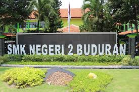

tentang_aku.com
Sekolah

Saya Sekolah di SMK Negeri 2 Buduran letaknya di Jl.Jenggolo No 2 A,
Bedrek, Siwalanpanji, Kec.Buduran, Kab.Sidoarjo, Jawa timur. Saya mulai bersekolah
disana pada tahun 2019.
Pada saat saya MPLS awalnya saya kira teman-teman saya paham betul tentang apa
Jurusan yang mereka ambil, eh ternyata banyak juga yang belum ngerti dan sedikit yang
ngerti. Sedikit demi sedikit saya paham tentang jurusan yang saya ambil ini. Dengan dibantu oleh
guru yang mengajar dan teman teman saya, saya mulai memahaminya. Teman-teman dikelas juga sangat
asik
mereka setia kawan apalagi kalauada teman yang kesusahan mereka pasti membantunya. Terkadang juga
kami sering debat tentang hal hal yang aneh dan juga sering bergurau. Apalagi pada saat jam
kosong
di waktu siang hari, biasanya dibuat sama anak-anak untuk tidur siang.